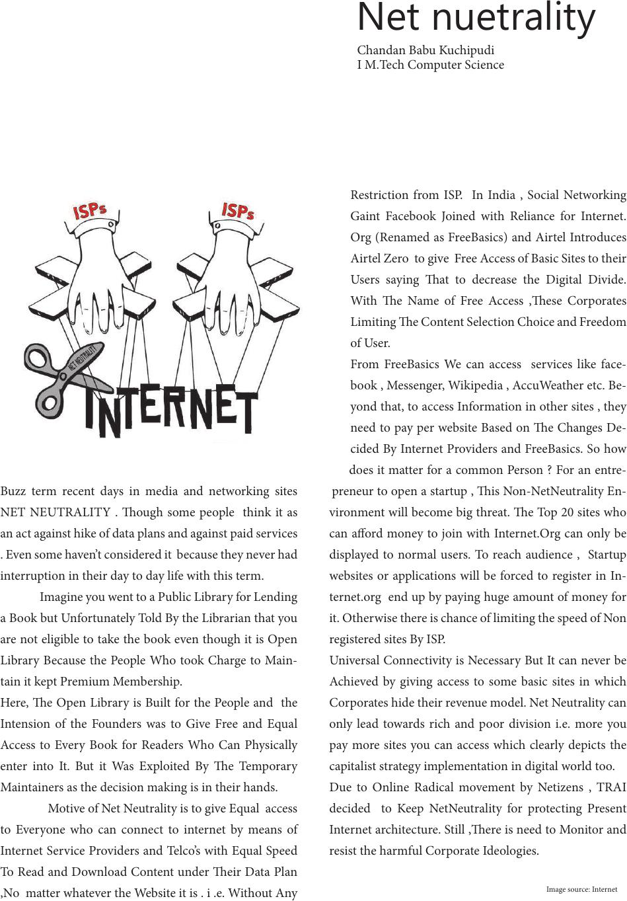

Net nuetrality
Chandan Babu Kuchipudi
I M.Tech Computer Science
Buzz term recent days in media and networking sites
NET NEUTRALITY . ough some people think it as
an act against hike of data plans and against paid services
. Even some haven’t considered it because they never had
interruption in their day to day life with this term.
Imagine you went to a Public Library for Lending
a Book but Unfortunately Told By the Librarian that you
are not eligible to take the book even though it is Open
Library Because the People Who took Charge to Main-
tain it kept Premium Membership.
Here, e Open Library is Built for the People and the
Intension of the Founders was to Give Free and Equal
Access to Every Book for Readers Who Can Physically
enter into It. But it Was Exploited By e Temporary
Maintainers as the decision making is in their hands.
Motive of Net Neutrality is to give Equal access
to Everyone who can connect to internet by means of
Internet Service Providers and Telco’s with Equal Speed
To Read and Download Content under eir Data Plan
,No matter whatever the Website it is . i .e. Without Any
Restriction from ISP. In India , Social Networking
Gaint Facebook Joined with Reliance for Internet.
Org (Renamed as FreeBasics) and Airtel Introduces
Airtel Zero to give Free Access of Basic Sites to their
Users saying at to decrease the Digital Divide.
With e Name of Free Access ,ese Corporates
Limiting e Content Selection Choice and Freedom
of User.
From FreeBasics We can access services like face-
book , Messenger, Wikipedia , AccuWeather etc. Be-
yond that, to access Information in other sites , they
need to pay per website Based on e Changes De-
cided By Internet Providers and FreeBasics. So how
does it matter for a common Person ? For an entre-
preneur to open a startup , is Non-NetNeutrality En-
vironment will become big threat. e Top 20 sites who
can aord money to join with Internet.Org can only be
displayed to normal users. To reach audience , Startup
websites or applications will be forced to register in In-
ternet.org end up by paying huge amount of money for
it. Otherwise there is chance of limiting the speed of Non
registered sites By ISP.
Universal Connectivity is Necessary But It can never be
Achieved by giving access to some basic sites in which
Corporates hide their revenue model. Net Neutrality can
only lead towards rich and poor division i.e. more you
pay more sites you can access which clearly depicts the
capitalist strategy implementation in digital world too.
Due to Online Radical movement by Netizens , TRAI
decided to Keep NetNeutrality for protecting Present
Internet architecture. Still ,ere is need to Monitor and
resist the harmful Corporate Ideologies.
Image source: Internet